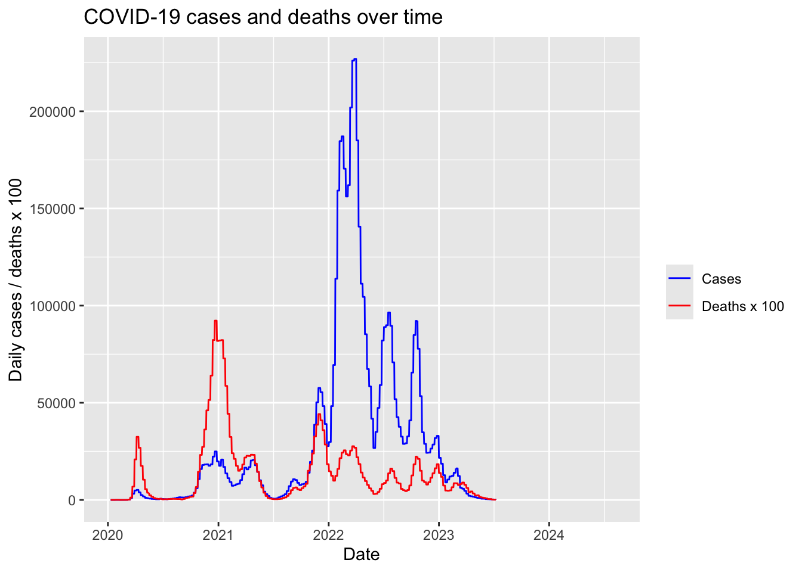

library(readr)
library(tidyverse)
covid_germany <- read_delim("data/covid_germany.csv")Proposal for StatProg2 Projekt
by Lukas Seibold and Felix Obermaier
Dataset and research questions:
Source and licence:
The Data set is from the following website: OWID - Covid Dataset
It can be downloaded in the following github repository: OWID - github repository COVID
The dataset is called owid-covid-data.csv
The Dataset contains all Data on Covid in the years 2020 - 2024 in all countries of the world
We decided we only want to look at german Data on covid so we filtered it by country
Then we cleaned it, by removing all variables, that only contained NAs (6 variables removed)
We documented the complete cleaning process in a seperate file called data_cleaning_covid.qmd, which can be found in our github repository. All of the data we used is stored there as well in the folder “data”.
Licence:
The Our World in Data Covid Dataset combines COVID-19 data from several official and scientific sources, including:
Johns Hopkins University (JHU CSSE) for confirmed cases and deaths
official national health authorities for vaccination and hospitalization data
the Oxford COVID‑19 Government Response Tracker for policy measures
international organizations such as the UN, World Bank, OECD, and IHME for demographic and socioeconomic indicators.
The dataset is published under the Creative Commons Attribution (CC BY) license.
This license allows users to:
use the data freely,
copy and redistribute it,
modify and adapt it,
use it commercially,
and include it in research or presentations,
as long as proper attribution to Our World in Data and the original data sources is provided.
What is in the data set?
The data set contains daily COVID-19 observations for Germany from January 2020 until August 2024.
- Number of rows: 1674
- Number of columns: 61
Each row represents one day of reported COVID-19 data in Germany.
The data set includes information on:
- COVID-19 cases (e.g.
total_cases,new_cases,new_cases_smoothed) - COVID-19 deaths (e.g.
total_deaths,new_deaths) - Reproduction rate (
reproduction_rate) - Hospital and ICU patients (
hosp_patients,icu_patients) - Vaccination indicators
- Testing statistics
- Socioeconomic indicators and demographic variables
The key variables we expect to use are:
datenew_casesnew_cases_smoothedtotal_casesnew_deathstotal_deathsreproduction_rate
Throughout this project, we primarily use the smoothed variables provided in the dataset whenever they are available. Daily COVID-19 data are affected by reporting delays and systematic weekend effects, which can introduce artificial fluctuations in the time series. The smoothed variables reduce these short-term irregularities and therefore provide a better representation of the underlying trends that are relevant for our analyses. Unless otherwise stated, all analyses are based on the smoothed versions of the variables.
Research Questions
Question 1: How did vaccination coverage in Germany develop during the COVID-19 pandemic?
We will analyse people_fully_vaccinated_per_hundred together with new_vaccinations_smoothed and date, to analyse the development of COVID-19 vaccination coverage in Germany. Using line plots and descriptive statistics, we will identify the start of the vaccination campaign, periods of rapid vaccine uptake, peak vaccination activity, and the later plateau in vaccination coverage.
Goal: Descriptive
Type: Exploratory
Question 2: How did vaccination coverage relate to different dimensions of COVID-19 severity in Germany?
We investigate whether COVID-19 vaccination coverage was associated with different dimensions of disease severity in Germany. To explore these relationships, we focus separately on mortality and ICU occupancy without making causal claims about the effects of vaccination.
Goal: Exploratory
Type: Exploratory
Sub-question 2a: Are higher vaccination rates associated with lower COVID-19 mortality?
We will analyse people_vaccinated_per_hundred together with new_deaths_smoothed and date using line plots, scatter plots, correlation analysis, and descriptive statistics to examine whether higher vaccination coverage was associated with lower COVID-19 mortality in Germany.
Since this is an exploratory analysis, we investigate associations between vaccination coverage and mortality without making strong causal claims.
Sub-question 2b: Are higher vaccination rates associated with lower ICU occupancy?
We will analyse people_vaccinated_per_hundred together with icu_patients and date using line plots, scatter plots, correlation analysis, and descriptive statistics to examine whether higher vaccination coverage was associated with lower ICU occupancy in Germany.
Since this is an exploratory analysis, we investigate associations between vaccination coverage and ICU occupancy without making strong causal claims.
Audience and Context
This analysis is conducted in an academic setting as part of a data science and statistical programming project. The goal is to explore COVID-19 vaccination trends in Germany and investigate possible relationships between vaccination coverage, mortality, and intensive care unit (ICU) occupancy.
The primary audience consists of students, instructors, and individuals interested in understanding the development of vaccination campaigns during the COVID-19 pandemic. The analysis aims to communicate findings in a clear, accessible, and data-driven manner.
The results will be presented through a GitHub-hosted website created with Quarto. Appropriate presentation formats include interactive and static visualizations, time-series plots, scatter plots, statistical summaries, and brief written interpretations. This format allows the audience to explore the results and understand the key findings through both text and graphics.
Domain-informed quality checks
We examined the key variables used in our analysis.
- Vaccination rates (
people_vaccinated_per_hundredandpeople_fully_vaccinated_per_hundred) range from 0 to approximately 78 percent, which is within plausible bounds. - ICU patient counts range from 100 to 5761 and contain no negative values.
- Daily death counts are non-negative, although some unusually large values appear and may reflect reporting corrections or delayed reporting.
- Several variables contain missing values. Vaccination variables have more than 800 missing observations, while ICU patient counts and death counts also contain missing data. These missing values are likely related to changes in reporting availability over time. Some variables are completely missing for Germany and will therefore not be used in the analysis.
Initial Data Analysis (IDA)
Structure of the data
We use glimpse() to confirm the dimensions and data types of our key variables.
covid_germany %>%
select(
date, total_cases, new_cases, new_cases_smoothed,
total_deaths, new_deaths, new_deaths_smoothed,
reproduction_rate, icu_patients,
people_vaccinated_per_hundred, people_fully_vaccinated_per_hundred,
stringency_index
) %>%
glimpse()The structure matches our expectations: date is read as a proper date type and all measurement and count variables are numeric. Cumulative variables (total_cases, total_deaths) are present from the start, while smoothed, reproduction, ICU, and vaccination variables only begin later in the pandemic, which is reflected in the leading NA values.
Summary statistics for key variables
covid_germany %>%
select(
new_cases, new_cases_smoothed, new_deaths, new_deaths_smoothed,
reproduction_rate, icu_patients,
people_vaccinated_per_hundred, people_fully_vaccinated_per_hundred,
stringency_index
) %>%
summary()The table below reports the main summary statistics together with the number of missing values per variable.
| Variable | Min | Median | Mean | Max | NA |
|---|---|---|---|---|---|
new_cases |
0 | 0 | 29,983 | 1,588,891 | 392 |
new_cases_smoothed |
0 | 11,167 | 30,100 | 226,984 | 397 |
new_deaths |
0 | 0 | 136.5 | 6,460 | 392 |
new_deaths_smoothed |
0 | 79.0 | 137.0 | 922.9 | 397 |
reproduction_rate |
0.52 | 1.07 | 1.10 | 3.00 | 637 |
icu_patients |
100 | 1,253 | 1,771 | 5,761 | 480 |
people_vaccinated_per_hundred |
0.03 | 77.1 | 62.5 | 77.8 | 842 |
people_fully_vaccinated_per_hundred |
0.00 | 75.1 | 58.9 | 76.2 | 861 |
stringency_index |
0 | 43.1 | 44.2 | 85.2 | 582 |
Plots
Warning: Removed 397 rows containing non-finite outside the scale range
(`stat_bin()`).
The distribution of daily COVID-19 deaths is right-skewed. Most observations correspond to relatively low numbers of deaths, while a small number of days experienced substantially higher mortality. This indicates considerable variation in COVID-19 mortality over time.
Warning: Removed 397 rows containing missing values or values outside the scale range
(`geom_line()`).
Removed 397 rows containing missing values or values outside the scale range
(`geom_line()`).
Both COVID-19 cases and deaths exhibit clear wave-like patterns over time. Peaks in deaths generally occur shortly after peaks in reported cases, suggesting a temporal relationship between infection levels and mortality.
Note: The number of daily deaths has been multiplied by a factor of 100 to make both time series visible on the same scale. This transformation is only for visualization purposes.
Data quality issues and planned handling
Substantial missingness in key variables. Vaccination variables have over 840 missing values, ICU counts 480, and the reproduction rate 637. These gaps are concentrated at the beginning of the period, before the corresponding indicators were collected. We will restrict each analysis to the time window in which the relevant variable is actually available rather than imputing early values.
hosp_patientsis entirely missing for Germany (1,674 NAs). Although listed as a key variable in our earlier draft, it cannot be used. We will drop it and rely onicu_patientsas the measure of hospital burden.Reporting spikes in raw counts.
new_casesandnew_deathscontain extreme single-day values (up to 1.59 M cases and 6,460 deaths) caused by delayed or batched reporting. We will use the smoothed 7-day-average variables throughout to reduce the influence of these artefacts.Suspicious ICU minimum. The minimum ICU value is exactly 100, which is more likely a lower bound or rounding artefact in the source than a true minimum. We will keep this in mind when interpreting small ICU values rather than treating it as a clean lowest observation
Analysis plan
RQ1 — Vaccination coverage over time (descriptive). Variables: date, people_fully_vaccinated_per_hundred, new_vaccinations_smoothed. We will use a time-series line plot of people_fully_vaccinated_per_hundred to identify the overall phases of the vaccination campaign (start in early 2021, steep rise, plateau near 78 %), together with a line plot of new_vaccinations_smoothed to identify the period of peak vaccination activity, since the cumulative coverage variable is monotonic and cannot show a peak by itself. We will supplement both plots with descriptive statistics (e.g. range, mean, and timing of maximum daily vaccinations). Cleaning: filter each variable separately to the period where it is non-missing, since people_fully_vaccinated_per_hundred and new_vaccinations_smoothed may have different missingness patterns. Main risk: vaccination figures are not reported on every single day, so minor jumps or short gaps may be reporting artefacts rather than real changes in uptake.
RQ2a — Vaccination vs. mortality (exploratory). Variables: people_vaccinated_per_hundred, new_deaths_smoothed, date. We will use line plots, scatterplots, correlation analysis, and descriptive statistics to examine whether higher vaccination coverage was associated with lower COVID-19 mortality in Germany. Cleaning: restrict to the period where vaccination data exist and use the smoothed death series to dampen reporting spikes identified earlier. Main risk: strong confounding by time — higher vaccination coverage coincides with new variants, seasonality, and relaxed restrictions (stringency_index). Since this is an exploratory analysis, we examine associations only and make no causal claims.
RQ2b — Vaccination vs. ICU occupancy (exploratory). Variables: people_vaccinated_per_hundred, icu_patients, date. We will use the same approach as RQ2a (line plots, scatterplots, correlation analysis, descriptive statistics) to examine whether higher vaccination coverage was associated with lower ICU occupancy in Germany. Cleaning: same as RQ2a. Same time-confounding risk applies, plus the ICU lower-bound artefact (minimum value of exactly 100) noted in the quality checks, which we account for when interpreting low values. As an exploratory analysis, we make no causal claims.
Workflow organisation
Code style: We follow the tidyverse style guide and enforce it by formatting all code with
stylerbefore committing.Packages:
tidyverse(includingreadr,dplyr,ggplot2)Git workflow: We collaborate via GitHub. Each of us works on their own feature branch, and changes are merged into
mainthrough pull requests with a short review. Where possible we split work by research question to minimise merge conflicts..gitignore: We exclude large raw data files, rendered Quarto output, and any.env/secret files to keep the repository lightweight and clean.
Answering the Research Questions
Research Question 1
Model specification — RQ1
Response:
people_fully_vaccinated_per_hundredPredictor:
dateFilter: restricted to rows where
people_fully_vaccinated_per_hundredis not missing (vaccination reporting only begins in early 2021)Method:
geom_line(raw trajectory) plus a LOESS-smoothed trend line (geom_smooth) as a trial, to assess whether smoothing adds clarity over the raw reporting dataExpected output: a time-series plot showing the trajectory of full vaccination coverage, from which we identify and qualitatively describe the main campaign phases (onset, steep rise, plateau near 78%)
Interpretation: the plot characterizes how full vaccination coverage evolved over time; no comparison to other variables or causal claims are made at this stage
Can the data support our RQ1? – Sanity Check
glimpse(covid_germany)We confirmed that date, people_fully_vaccinated_per_hundred and new_vaccinations_smoothedhave the correct data types in order for us to create the planned line plot (Date and double) using glimpse().
#check variable people_fully_vaccinated_per_hundred
covid_germany %>%
filter(!is.na(people_fully_vaccinated_per_hundred)) %>%
summarise(start = min(date), end = max(date))
covid_germany %>%
filter(!is.na(people_fully_vaccinated_per_hundred)) %>%
arrange(date) %>%
mutate(gap = as.numeric(date - lag(date))) %>%
summarise(max_gap = max(gap, na.rm = TRUE))The Data coverage on vaccination starts in January of 2021 and ends in July of 2023. In this time range the data coverage is very good with a maximum gap of 1 day without coverage.
#check variable new_vaccinations_smoothed
covid_germany %>%
filter(!is.na(new_vaccinations_smoothed)) %>%
summarise(start = min(date), end = max(date))
covid_germany %>%
filter(!is.na(new_vaccinations_smoothed)) %>%
arrange(date) %>%
mutate(gap = as.numeric(date - lag(date))) %>%
summarise(max_gap = max(gap, na.rm = TRUE))By using the same method as before we now found out that the data for new_vaccinations_smoothedranges from December 2020 until July 2023 datewise. Also just like with people_fully_vaccinated_per_hundred the coverage for this variable is very good.
As we explored in the Domain-informed quality checks part of our Proposal, the values of people_fully_vaccinated_per_hundred ranges from 0 to 78, which is enough variation to detect distinct phases over the available period.
covid_germany %>%
filter(!is.na(new_vaccinations_smoothed)) %>%
summarise(
min = min(new_vaccinations_smoothed),
max = max(new_vaccinations_smoothed),
mean = mean(new_vaccinations_smoothed),
sd = sd(new_vaccinations_smoothed)
)The variation of values as well as the variance of new_vaccinations_smoothed is also going to be sufficient to answer our research question.
covid_germany %>% filter(!is.na(people_fully_vaccinated_per_hundred)) %>% ggplot(aes(
x = date,
y = people_fully_vaccinated_per_hundred
))+
geom_line()+
labs(title = "Development of vaccination coverage in Germany during Covid",
x = NULL,
y = "People fully vaccinated per hundred",
caption = "Source: Our World in Data COVID-19 dataset")+
theme_minimal()